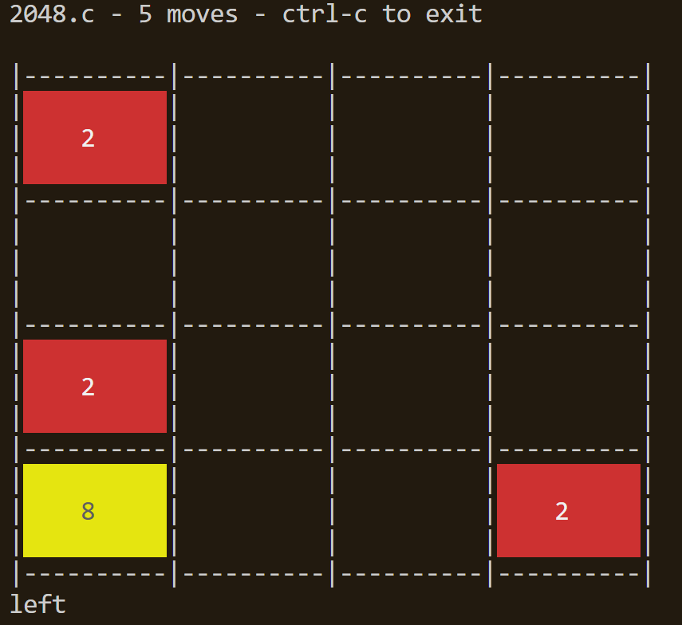

WAMR
RuxOS 支持在 Qemu 上通过wasm运行时 WAMR来运行wasm应用。
WAMR简介
WAMR是一个轻量级的wasm运行时，支持在嵌入式设备上运行wasm应用，现在归属于字节码联盟，由社区维护。RuxOS提供了Hello World和2048小游戏的wasm应用作为示例，同时支持WASI-NN，具有运行神经网络模型的能力。
将rux-wamr克隆到RuxOS项目的apps/c目录下，有如下结构：
├── axbuild.mk
├── CMakeLists.txt
├── features.txt
├── README.md
├── rootfs
│ ├── ...
├── wamr.patch
rootfs/目录下的main.wasm和其他wasm文件是通过WASM编译器从.c文件编译而来的。rootfs/是一个最小的RuxOS根文件系统，使用9pfs供 RuxOS 使用。
编译WAMR并运行示例
WAMR的编译依赖于cmake，所以在编译WAMR之前需要安装cmake。
在RuxOS根目录运行下面的命令，会启动hello world的wasm应用。
make A=apps/c/rux-wamr ARCH=aarch64 LOG=info SMP=4 MUSL=y V9P=y V9P_PATH=apps/c/rux-wamr/rootfs ARGS="iwasm,/main.wasm" run
参数解释：
-
A: 该参数指向 WAMR 应用所在的目录。 -
ARCH:ARCH表示将 RuxOS 运行在何种架构上，可选架构参数包括:x86_64,aarch64,riscv64. -
LOG:LOG表示输出的日志等级，更低的日志等级意味着更详细的输出。可选包含：error,warn,info,debug,trace。 -
SMP:SMP用于使能 RuxOS 的多核 feature，紧跟着的数字表示启动的核数。 -
MUSL: 该参数表示使用musl libc作为编译时的c库。 -
V9P: 该参数用于使能 qemu 的 virtio-9p。 -
V9P_PATH:V9P_PATH指向 host 上的用于共享的目录，这里使用rux-wamr的rootfs目录，其中包含了wasm应用的wasm文件。 -
ARGS:ARGS提供wasm应用运行所需要的参数。这里表示用iwasm可执行文件解释执行wasm字节码文件/main.wasm。若要运行2048小游戏，将/main.wasm改为/2048.wasm即可。
输入wasd以控制，运行2048小游戏的界面如下：

若需要将参数传递给wasm应用的main函数，可以在/main.wasm后面添加参数，如iwasm,/main.wasm,--help。
若需要将参数传递给iwasm，如指定给iwasm的环境变量，可将其放在iwasm之后，/main.wasm之前，如iwasm,--env="xxx=yyy",/main.wasm。
运行自己的wasm应用
wasm具有跨平台的特性，所以在RuxOS上可以直接运行在本机上编译好的wasm应用。
想要运行自己的wasm应用，只需要在本地编译好wasm应用，将wasm文件放到rux-wamr的rootfs目录下，然后修改上述命令的ARGS参数即可运行。
这里使用WASI-SDK编译wasm应用。首先下载WASI-SDK并解压到合适的目录，然后运行类似下面的命令编译wasm应用：
$WASI_SDK_DIR/bin/clang -O3 -o main.wasm main.c
编译完成后将main.wasm文件放到rux-wamr的rootfs目录下即可。
WASI-NN
如果需要在WAMR中使用NN（神经网络）支持，需要运行带WASI_NN=1参数的make命令：
make A=apps/c/wamr ARCH=aarch64 LOG=info SMP=4 MUSL=y V9P=y V9P_PATH=apps/c/wamr/rootfs WASI_NN=1 ARGS="iwasm,/main.wasm" run
例如，如果你想自己编译支持神经网络的测试用例，可以在apps/c/wamr/wasm-micro-runtime-{version}/core/iwasm/libraries/wasi-nn/test/目录中使用如下命令：
# 假设你已经将wasi-sdk安装在/opt/wasi-sdk目录下
/opt/wasi-sdk/bin/clang \
-Wl,--allow-undefined \
-Wl,--strip-all,--no-entry \
--sysroot=/opt/wasi-sdk/share/wasi-sysroot \
-I../include -I../src/utils \
-o test_tensorflow.wasm \
test_tensorflow.c utils.c
如果你想将c++文件编译成wasm文件，你需要在上述命令中加上-lc++和-lc++abi参数。
然后复制test_tensorflow.wasm到apps/c/wamr/rootfs目录下即可：
cp test_tensorflow.wasm ../../../../../../rootfs/
运行test_tensorflow_quantized.wasm文件的方法也是一样的。
*.tflite模型文件由rootfs/models/*.py生成，可以在本地使用python生成自定义的*.tflite模型文件。
运行上述make命令体验在RuxOS上运行神经网络模型。
如果你想在Rust中构建支持wasi_nn的wasm，需要在make命令中添加WAMR_BUILD_WASI_EPHEMERAL_NN=1参数。因为Rust中wasi_nn的模块名是wasi_ephemeral_nn，而不是wasi_nn：
make A=apps/c/wamr ARCH=aarch64 LOG=info run MUSL=y V9P=y V9P_PATH=apps/c/wamr/rootfs ARGS="iwasm,--env="TARGET=cpu",--dir=.,/built_from_rust.wasm" WASI_NN=1 WAMR_BUILD_WASI_EPHEMERAL_NN=1
更多
你也可以使用这个应用在ruxos上运行其他wasm文件。只需要编译.wasm文件并将其放入rootfs/目录中。然后使用上面的命令运行它，只需更改ARGS参数，就可以在ruxos中享受wasm应用。